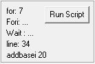
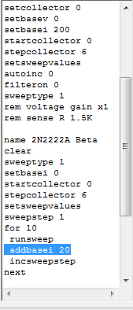

|  |  | Clicking the Run Script button resets the script program pointer to the first line and starts execution of the code. The exception is when the Script Control is set to Pause or Single Step. Under these settings, the program will continue from the paused point or step to the next line. The current line of code is highlighted in the script memo pad text. In addition, program indicators are present to the left of the Run Script button. These show the count for For Loops and Wait statements. The line position for the code and the instruction under execution are also shown. Main |